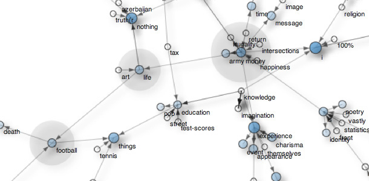

pattern
Pattern is a web mining module for the Python programming language.
It bundles tools for data retrieval (Google + Twitter + Wikipedia API, web spider, HTML DOM parser), text analysis (rule-based shallow parser, WordNet interface, syntactical + semantical n-gram search algorithm, tf-idf + cosine similarity + LSA metrics), clustering and classification (k-means, KNN, SVM), and data visualization (graph networks).
The module is bundled with 30+ example scripts and 350+ unit tests.

Download
 |
Pattern 2.3 | download (16MB)
Reference: De Smedt, T. & Daelemans, W. (2011). |
ModulesHelper modules Command-line |
Contribute |
Installation
Pattern is written for Python 2.4+ (no support for Python 3 yet). The module has no external dependencies except when using LSA in the vector module, which requires NumPy (installed by default on Mac OS X).
To install it so that the module is available in all your scripts, open a terminal and do:
> cd pattern-2.3
> python setup.py install
If you have pip, you can automatically download and install from the PyPi repository:
> pip install pattern
If none of the above works, you can make Python aware of the module in three ways:
- Put the pattern subfolder in the same folder as your script.
- Put the pattern subfolder in the standard location for modules so it is available to all scripts:
c:\python25\Lib\site-packages\ (Windows),
/Library/Python/2.5/site-packages/ (Mac OS X),
/usr/lib/python2.5/site-packages/ (Unix). - Add the location of the module to sys.path in your script, before importing it:
>>> MODULE = '/users/tom/desktop/pattern'
>>> import sys; if MODULE not in sys.path: sys.path.append(MODULE)
>>> from pattern.en import parse, Sentence
Quick overview
pattern.web
Module pattern.web is a web toolkit that bundles various API's (Google, Gmail, Bing, Twitter, Wikipedia, Flickr) with a robust HTML parser and web spider. Its purpose is to retrieve online content in an easy-to-use, uniform way.
>>> from pattern.web import Twitter, plaintext
>>> for tweet in Twitter().search('"more important than"', cached=False):
>>> print plaintext(tweet.description)
'HINT: The mobile web is more important than mobile apps.'
'Start slowly, direction is more important than speed.'
'Imagination is more important than knowledge. - Albert Einstein'
...
pattern.en
Module pattern.en is a natural language processing (NLP) toolkit for English. It is based on regular expressions, meaning that it is fast but on occasion also prone to incorrect results (see MBSP for a robust approach compatible with Pattern). It has functionality for word inflection (for example: verb conjugation and noun pluralization), a Python interface to the WordNet database, and a Brill-based shallow parser. A shallow parser analyzes a sentence and identifies the constituents (nouns, verbs, etc.).
>>> from pattern.en import parse, pprint
>>> s = 'The mobile web is more important than mobile apps.'
>>> s = parse(s, relations=True, lemmata=True)
>>> pprint(s)
WORD TAG CHUNK ROLE ID PNP LEMMA
The DT NP SBJ 1 - the
mobile JJ NP ^ SBJ 1 - mobile
web NN NP ^ SBJ 1 - web
is VBZ VP - 1 - be
more RBR ADJP - - - more
important JJ ADJP ^ - - - important
than IN PP - - PNP than
mobile JJ NP - - PNP mobile
apps NNS NP ^ - - PNP app
Note how the sentence has been annotated with various tags, discerning for example nouns (NN), adjectives (JJ), determiners (DT), verbs (VB), noun phrases (NP), sentence subject (SBJ), and a prepositional noun phrase (PNP). The parsed sentence can then be used to create a parse tree: a Python structure of related objects that is easy to traverse and inspect.
>>> from pattern.en import parse, split
>>> s = 'The mobile web is more important than mobile apps.'
>>> s = parse(s)
>>> s = split(s)
>>> for chunk in s.sentences[0].chunks:
>>> for word in chunk.words:
>>> print word,
>>> print
Word(u'The/DT') Word(u'mobile/JJ') Word(u'web/NN')
Word(u'is/VBZ')
Word(u'more/RBR') Word(u'important/JJ')
Word(u'than/IN')
Word(u'mobile/JJ') Word(u'apps/NNS')
A parser for Dutch (based on Jeroen Geertzen's language model) is also available: pattern.nl.
pattern.search
Module pattern.search contains an elegant search algorithm to retrieve sequences of words (called n-grams) from a parsed sentence.
>>> from pattern.en import parse, split
>>> from pattern.search import search
>>> s = 'The mobile web is more important than mobile apps.'
>>> s = parse(s, relations=True, lemmata=True)
>>> s = split(s)
>>>
>>> for match in search('NP be (RB)+ important than NP', s):
>>> print match.constituents()[-1], "=>", \
>>> match.constituents()[0]
Chunk('mobile apps/NP') => Chunk('The mobile web/NP-SBJ-1')
Observe the given search pattern: "NP be (RB)+ important than NP".
It means: any noun phrase followed by the verb to be (is, was, ...), followed by zero or more adverbs (e.g. much, more), followed by the words important than, followed by any noun phrase. It will match any of the following variations:
- "the mobile web will be much more important than mobile apps"
- "mobile apps are less important than the mobile web"
- "a good blog is more important than a fancy facebook page", etc.
pattern.graph
Module pattern.graph provides a data structure to represent relationships between nodes (e.g. words, concepts, entities ...) The relative importance (or centrality) of each node can then be calculated. Graphs can be exported as an interactive web page using the HTML <canvas> element (demo).
The screenshot shows an exported graph with nodes pointing to more important nodes (data mined from Bing). Nodes with a lot of "traffic" are marked with a shadow (money, football, life), important nodes are marked in blue (experience, I, nothing, money).

Note: The nothing result could use some extra post-processing, e.g. in: nothing is more important than life, the word life is important, not the word nothing.
Source code:
>>> from pattern.web import Bing, plaintext
>>> from pattern.en import Sentence, Chunk, parse
>>> from pattern.search import Pattern
>>> from pattern.graph import Graph, Node, Edge, export
>>>
>>> g = Graph()
>>> for i in range(10):
>>> for r in Bing().search('"more important than"', start=i+1, count=50):
>>> s = plaintext(r.description.lower())
>>> s = Sentence(parse(s))
>>> p = Pattern.fromstring('NP (VP) more important than NP')
>>> for m in p.search(s):
>>> a = m.constituents(p[+0])[-1] # Left NP.
>>> b = m.constituents(p[-1])[+0] # Right NP.
>>> a = (isinstance(a, Chunk) and a.head or a).string
>>> b = (isinstance(b, Chunk) and b.head or b).string
>>> if a and b:
>>> if a not in g:
>>> g.add_node(a, radius=4, stroke=(0,0,0,0.8))
>>> if b not in g:
>>> g.add_node(b, radius=4, stroke=(0,0,0,0.8))
>>> g.add_edge(g[a], g[b], stroke=(0,0,0,0.6))
>>>
>>> g = g.split()[0] # Largest subgraph.
>>>
>>> for n in g.sorted()[:40]: # Sorted by Node.weight.
>>> n.fill = (0.0, 0.5, 1.0, 0.7 * n.weight)
>>>
>>> export(g, 'test', directed=True, weighted=0.6, distance=5, force=0.05, repulsion=150)
Examples & experiments
 |
Belgian elections, June 13, 2010 – Twitter opinion mining After the fall of the previous government, the New Flemish Alliance emerged as the plurality party with 27 seats. In the week before the elections we analyzed 7,600 tweets that mentioned the name of a Belgian politician. read more |
 |
November 2010 – March 2011, 100 days of web mining During a 100-day period, we collected 6,400 Google News items and 70,000 tweets with the goal of finding a correlation between important news items and personal opinions on Twitter. What we got was profanity, mostly. read more |